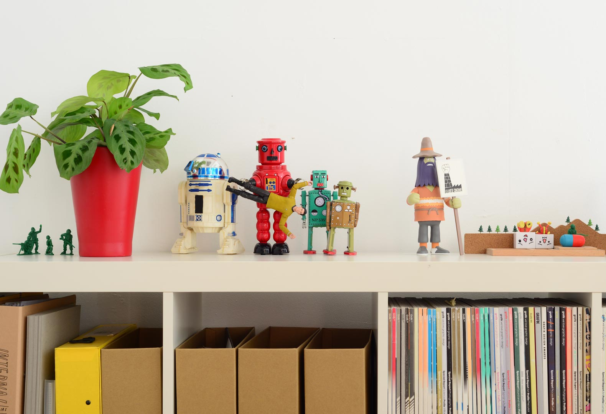
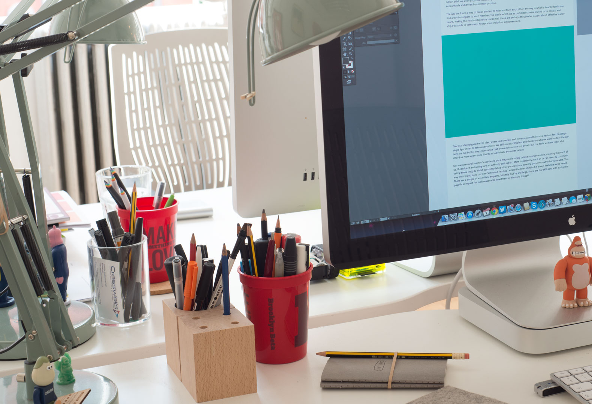
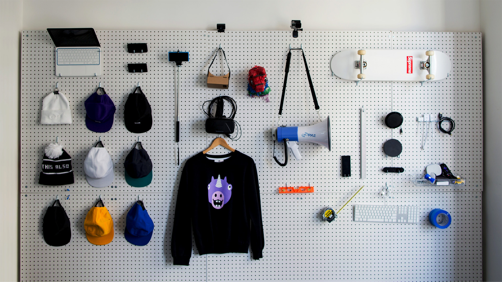

<!-- <div class="c-row c-row--special u-bgcolor-alpha-base u-z-delta">
    <div class="o-container">
        <div class="c-gallery js-gallery">
            <div class="c-gallery__cell"></div>
            <div class="c-gallery__cell"></div>
            <div class="c-gallery__cell"></div>
        </div>
    </div>
</div> -->
<div class="c-row c-row--lg c-row--top u-z-beta">
    <div class="o-container">
        <div class="c-main-section">
            <!-- <div class="o-grid o-grid--gutter o-flex o-flex--wrap">
                <div class="o-grid__item u-1-of-2-bp4">
                    <div class="u-max-width-md s-content u-text-align-justify">
                        <p class="u-color-beta-base u-font-family-beta">
                            We love making things, collaborating, identifying interesting problems and figuring out what we can build to help solve them
                        </p>
                    </div>
                </div> -->
                <!-- <div class="o-grid__item u-1-of-2-bp4"> -->
                    <div class="u-max-width-md s-content">
                        <p class="c-intro-text">
                            Klaar om zelf aan de slag te gaan en alleen of samen met je vrienden of collega’s een stuk van de machien te bouwen? We helpen je alvast op weg.
                        </p>
                        <h2>
                            Begin en einde
                        </h2>
                        <p>
                            Om alle verschillende onderdelen van de machien aan elkaar te kunnen koppelen zijn we vrij strikt over hoe jullie machien start en eindigd. Het geheime codewoord is: Touw.
                            Ga er vanuit dat je onderdeel begint met een touwtje waaraan getrokken word. Je kan dan zelf kiezen of hierdoor een knikker vertrekt, een domino omgetrokken wordt of een auto start.
                            Je kan kiezen wat je machien doet. Blijft het een knikkerbaan, laat je een trein vertrekken of gooi je met TV’s. We zijn voor creativiteit en ongeziene machines. Dansers, fotoflitsen of water-aangedreven miniatuur jedi’s zijn toegelaten. We zijn verzekerd, maar de algemene regel is: als je het niet in uw living doet, dan ook niet bij ons.
                            Op het einde van jullie keten moet er opnieuw aan het koord worden getrokken. Na julllie komt immers een ander stukje van de machien. Zorg dat het touw over minstens 10 cm beweegt binnen de seconde. Zo is er genoeg kracht om de volgende stap in gang te steken.
                        </p>
                        <h2>
                            5 tips van Stephan
                        </h2>
                        <p>
                            Je kan kiezen wat je machien doet. Blijft het een knikkerbaan, laat je een trein vertrekken of gooi je met TV’s. We zijn voor creativiteit en ongeziene machines. Dansers, fotoflitsen of water-aangedreven miniatuur jedi’s zijn toegelaten. We zijn verzekerd, maar de algemene regel is: als je het niet in uw living doet, dan ook niet bij ons.
                            Op het einde van jullie keten moet er opnieuw aan het koord worden getrokken. Na julllie komt immers een ander stukje van de machien. Zorg dat het touw over minstens 10 cm beweegt binnen de seconde. Zo is er genoeg kracht om de volgende stap in gang te steken.
                        </p>
                    </div>

                <!-- </div>
            </div> -->
        </div>
    </div>
</div>
